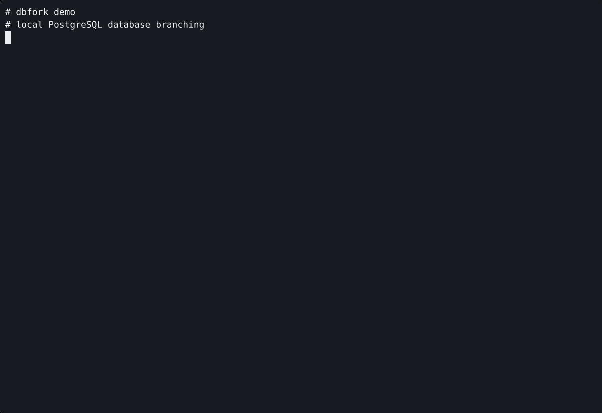

Server-side clone path
PostgreSQL duplicates the database on disk instead of streaming rows through a client process, which is why the branching loop feels fast.
Disposable local Postgres branches
dbfork uses PostgreSQL's native CREATE DATABASE ... TEMPLATE
path to create local database branches fast enough for daily development,
migration testing, schema diffing, and feature-isolated workflows.

Why dbfork
Feature branches for code are normal. Feature branches for the local database usually are not, which is why migration testing and schema experiments still fall back to slow dump and restore loops. dbfork closes that gap with a workflow that feels instant enough to use every day.
PostgreSQL duplicates the database on disk instead of streaming rows through a client process, which is why the branching loop feels fast.
Give a migration its own disposable branch, run the change, inspect the result, and drop the branch when the experiment is over.
Compare the branch against the source database before merge so drift and accidental changes show up before they become shared state.
No hosted service, no storage layer, and no heavy multi-container branch system. If you already have local Postgres, you already have the primitive.
Speed story
The public benchmark framing in the repo is the right mental model: for a 1 GB development database, dump and restore usually takes minutes, while template cloning typically finishes in a few seconds on the same machine.
1 to 3 seconds
Server-side template clone, built for repeated use during active development.
2 to 5 minutes
Good for backup-style workflows, too slow for every migration and feature branch.
Install
dbfork is most convincing when you can try it against your existing local instance immediately. The page keeps the install and first-use path short on purpose.
go install github.com/Meru143/dbfork/cmd/dbfork@latest
dbfork create feature_migration
dbfork diff feature_migration
dbfork drop feature_migration --forceUse it for:
- migration rehearsals
- schema experiments
- isolated feature branches
- branch-vs-source diffing